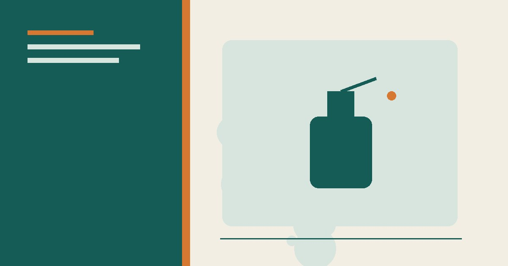
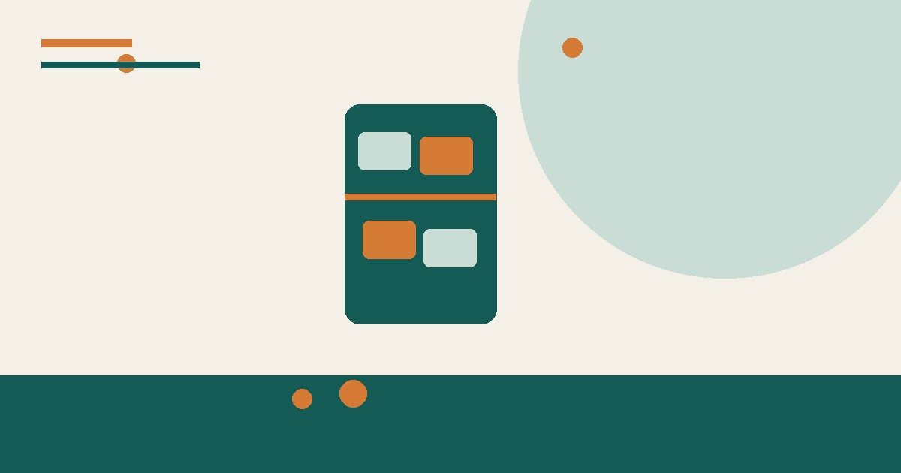
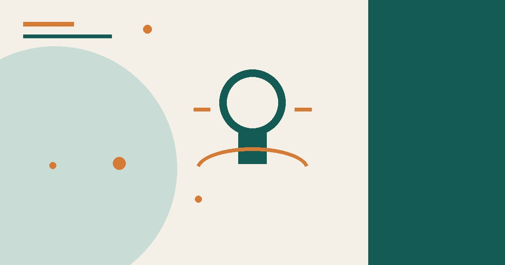

نصائح منزلية
مواد تنظيف لا تخلطها معًا: جدول سلامة منزلي
جدول عملي يوضح خلطات التنظيف الخطرة، طريقة قراءة الملصق، التهوية، التخزين، وما يجب فعله عند التعرض للأبخرة.
حلول عملية لبيت أكثر ترتيبًا وراحة وكفاءة.
جدول عملي يوضح خلطات التنظيف الخطرة، طريقة قراءة الملصق، التهوية، التخزين، وما يجب فعله عند التعرض للأبخرة.

دليل غسيل الملابس الصحيح: فرز الملابس، درجات حرارة الغسيل، اختيار المسحوق، إزالة البقع قبل الغسيل، والتجفيف السليم.

دليل للوقاية من حشرات المنزل وتقليل مصادرها واستخدام المصائد أو المنتجات المسجلة وفق التعليمات عند الحاجة.

خطة تنظيف المطبخ في 30 دقيقة: الترتيب الصحيح للتنظيف، أدوات سريعة، وحيل لتوفير الوقت في المطابخ المزدحمة.

طريقة تنظيم الثلاجة وحفظ الطعام بأمان: توزيع الرفوف، درجة الحرارة، تبريد البقايا، نظام الأولوية وقائمة أسبوعية لتقليل الهدر.

خطوات عملية لتقليل استهلاك الكهرباء في المنزل عبر قياس الاستهلاك وضبط التكييف والإضاءة والغسيل والأجهزة دون وعود توفير مبالغ فيها.

طرق عملية لتقليل الروائح الكريهة في المنزل: تحديد المصدر، تنظيف المطبخ والحمام، تحسين التهوية، ومتى تحتاج إلى فني.

دليل تنظيف المنزل بمواد بسيطة مع جدول للأسطح واحتياطات السلامة والمواد التي لا يجوز خلطها، والفرق بين التنظيف والتعقيم.

خطة عملية لترتيب المنزل في 15 دقيقة يوميًا فقط: جدول أسبوعي، قواعد ذهبية، وأدوات تساعدك على الحفاظ على بيت مرتب دائمًا.